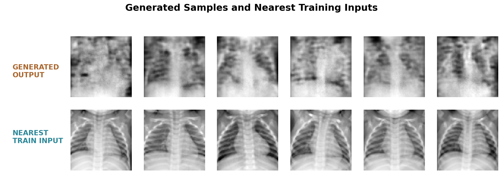
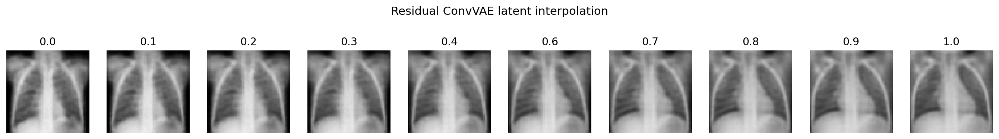

胸部 X 射线与残差卷积 VAE
从一组胸片开始，先把图像变成模型可以处理的矩阵，再观察 ResidualConvVAE 如何把图像编码到潜空间并生成新的胸片。下面依次说明输入、归一化、训练设置和图像结果。
参考答案仅做参考，并非代表唯一正确结果，效果以运行结果为准，具体代码形式可自行调整。
1. 输入是一组灰度胸部 X 射线
训练数据来自 Chest X-ray Pneumonia 数据集的 train/NORMAL 文件夹。本页选用其中的正常胸片，使生成结果便于和常见的正常胸片外观比较；文件夹标签没有作为模型的输入。
[1, 64, 64]。胸片 灰度化
64 × 64 归一化
[-1, 1] 编码器
μ、log σ² 潜变量
64 维 解码器
重建或生成
2. ResidualConvVAE 结构和训练代码
归一化范围
像素先从 [0, 1] 映射到 [-1, 1]，让输入和解码器最后的 Tanh 输出使用同一范围。这样网络不需要同时适应两个不同的数值尺度，生成结果也能直接映射回可显示的灰度范围。
x_normalized = x / 255.0
x_normalized = x_normalized * 2.0 - 1.0
# 解码器最后一层
nn.Tanh()编码、采样与重建
编码器把输入压缩为均值和对数方差，重参数化得到 64 维潜变量，再由解码器还原为 [B, 1, 64, 64]。同一个解码器既能接收输入图像的潜变量来重建，也能接收新的潜变量来生成。
def group_count(channels):
return 8 if channels % 8 == 0 else 1
class ResidualBlock(nn.Module):
def __init__(self, channels):
super().__init__()
self.norm1 = nn.GroupNorm(group_count(channels), channels)
self.conv1 = nn.Conv2d(channels, channels, 3, padding=1)
self.norm2 = nn.GroupNorm(group_count(channels), channels)
self.conv2 = nn.Conv2d(channels, channels, 3, padding=1)
self.activation = nn.SiLU(inplace=True)
def forward(self, x):
residual = x
x = self.conv1(self.activation(self.norm1(x)))
x = self.conv2(self.activation(self.norm2(x)))
return residual + x
class DownBlock(nn.Module):
def __init__(self, in_channels, out_channels):
super().__init__()
self.down = nn.Conv2d(in_channels, out_channels, 4, 2, 1)
self.norm = nn.GroupNorm(group_count(out_channels), out_channels)
self.activation = nn.SiLU(inplace=True)
self.residual = ResidualBlock(out_channels)
def forward(self, x):
x = self.activation(self.norm(self.down(x)))
return self.residual(x)
class UpBlock(nn.Module):
def __init__(self, in_channels, out_channels):
super().__init__()
self.up = nn.ConvTranspose2d(in_channels, out_channels, 4, 2, 1)
self.norm = nn.GroupNorm(group_count(out_channels), out_channels)
self.activation = nn.SiLU(inplace=True)
self.residual = ResidualBlock(out_channels)
def forward(self, x):
x = self.activation(self.norm(self.up(x)))
return self.residual(x)
class ResidualConvVAE(nn.Module):
def __init__(self, latent_dim=64):
super().__init__()
self.stem = nn.Sequential(
nn.Conv2d(1, 32, 3, padding=1),
nn.GroupNorm(8, 32),
nn.SiLU(inplace=True)
)
self.encoder = nn.Sequential(
ResidualBlock(32),
DownBlock(32, 64), DownBlock(64, 128),
DownBlock(128, 256), DownBlock(256, 256)
)
self.to_mu = nn.Linear(256 * 4 * 4, latent_dim)
self.to_logvar = nn.Linear(256 * 4 * 4, latent_dim)
self.from_z = nn.Linear(latent_dim, 256 * 4 * 4)
self.decoder = nn.Sequential(
ResidualBlock(256),
UpBlock(256, 256), UpBlock(256, 128),
UpBlock(128, 64), UpBlock(64, 32),
nn.Conv2d(32, 1, 3, padding=1), nn.Tanh()
)
def encode(self, x):
features = self.encoder(self.stem(x)).flatten(1)
mu = self.to_mu(features)
logvar = self.to_logvar(features).clamp(-8, 8)
return mu, logvar
@staticmethod
def reparameterize(mu, logvar):
std = torch.exp(0.5 * logvar)
return mu + torch.randn_like(std) * std
def decode(self, z):
features = self.from_z(z).view(-1, 256, 4, 4)
return self.decoder(features)
def forward(self, x):
mu, logvar = self.encode(x)
z = self.reparameterize(mu, logvar)
return self.decode(z), mu, logvar, z重建和生成的训练步骤
EDGE_WEIGHT = 0.25
KL_WEIGHT = 0.0005
def gradient_loss(prediction, target):
pred_dx = prediction[:, :, :, 1:] - prediction[:, :, :, :-1]
target_dx = target[:, :, :, 1:] - target[:, :, :, :-1]
pred_dy = prediction[:, :, 1:, :] - prediction[:, :, :-1, :]
target_dy = target[:, :, 1:, :] - target[:, :, :-1, :]
return 0.5 * (
F.l1_loss(pred_dx, target_dx) + F.l1_loss(pred_dy, target_dy)
)
def vae_loss(reconstruction, target, mu, logvar, beta):
reconstruction_l1 = F.l1_loss(reconstruction, target)
gradient_l1 = gradient_loss(reconstruction, target)
kl_loss = -0.5 * torch.mean(1 + logvar - mu.square() - logvar.exp())
total_loss = reconstruction_l1 + EDGE_WEIGHT * gradient_l1 + beta * kl_loss
return total_loss, reconstruction_l1, gradient_l1, kl_loss
optimizer = torch.optim.AdamW(vae.parameters(), lr=2e-4, weight_decay=1e-4)
for epoch in range(50):
beta = KL_WEIGHT * min(1.0, (epoch + 1) / 10)
for x, _ in loader:
x = x.to(DEVICE)
optimizer.zero_grad(set_to_none=True)
reconstruction, mu, logvar, z = vae(x)
total_loss, reconstruction_l1, gradient_l1, kl_loss = vae_loss(
reconstruction, x, mu, logvar, beta
)
total_loss.backward()
optimizer.step()
with torch.no_grad():
reconstruction, mu, logvar, z = vae(x_holdout)
z_a, z_b = train_mu[left_indices], train_mu[right_indices]
alpha = torch.rand(128, 1, device=DEVICE).clamp(0.25, 0.75)
latent_std = train_mu.std(dim=0, keepdim=True).clamp_min(0.15)
generated_z = (1 - alpha) * z_a + alpha * z_b
generated_z = generated_z + 0.02 * latent_std * torch.randn_like(generated_z)
generated = vae.decode(generated_z)3. 训练设置
| 项目 | 设置 | 说明 |
|---|---|---|
| 模型 | ResidualConvVAE | GroupNorm、SiLU 和残差块组成编码器与解码器，从潜变量生成单通道图像。 |
| 训练记录 | 按代码设置 | 训练曲线记录总损失、重建 L1、梯度 L1 和 KL 损失。 |
| batch / latent | 64 / 64 | 每张输入图像编码为 64 维潜变量，批量训练使用 64 张图像。 |
| 生成方式 | 128 个候选 | 在不同训练图像的潜向量之间插值，并加入少量按潜变量尺度控制的噪声。 |
| 学习率 / 权重衰减 | 2e-4 / 1e-4 | 使用 AdamW 更新参数。 |
| 计算设备 | NVIDIA GeForce RTX 4060 Laptop GPU | 使用 CUDA 完成训练，耗时会随设备和环境变化。 |
| 固定随机种子 | 20260803 | 固定数据划分、训练初始化和展示采样，便于复核。 |
4. 输入、重建和生成结果
输入图像经过编码器和解码器得到重建图像；不同训练图像的潜向量经过插值后送入解码器得到生成图像。三者的用途不同：输入用于观察原始结构，重建用于检查模型保留输入信息的程度，生成用于检查模型从潜空间产生新样本的能力。

重建
同一批输入先编码为 μ 和 log σ²，再解码为重建图像。留出集重建 L1 为 0.0878；这个数值越小，表示像素层面的还原越接近输入。
mu, logvar = vae.encode(x)
reconstruction = vae.decode(
vae.reparameterize(mu, logvar)
)

5. 训练曲线和像素分布
总损失、重建 L1 和梯度 L1 在训练过程中下降，说明模型逐步学到了训练集中的灰度和空间结构；KL 项在前 10 轮完成权重预热后保持在约 3 附近。像素直方图用于比较真实留出集和生成样本的整体灰度分布。


6. 真实指标和结果判断
| 图像统计 | 真实 NORMAL 留出集 | 生成候选图像 | 读法 |
|---|---|---|---|
| 平均灰度 | 0.5521 | 0.5371 | 整体亮度接近。 |
| 灰度标准差 | 0.1816 | 0.1867 | 两组图像的灰度波动接近。 |
| 边缘强度 | 0.0382 | 0.0288 | 生成图的边缘变化更平滑。 |
| 中央—边缘对比 | 0.0224 | 0.0211 | 中央纵隔与周边区域的关系接近。 |
| 双肺对比 | 0.2221 | 0.2485 | 生成图保留了双肺与中央区域的整体对比。 |



结论：参考结果中的生成图像已经呈现出可辨认的正常胸片外观，双肺和纵隔结构清晰可见；边缘和肺纹理仍比真实胸片平滑，适合用来观察生成模型如何学习整体形态以及输入与输出之间的差异。
7. 结果文件
图像、曲线和原始指标 JSON 均来自同一次训练运行。完整数值记录见 task2_pytorch_result.json。
task2_real_xray_grid.pngtask2_reconstruction_grid.pngtask2_generated_samples.pngtask2_input_generated_comparison.pngtask2_training_curve.pngtask2_training_progress.pngtask2_intensity_histogram.pngtask2_quality_metrics.pngtask2_nearest_neighbors.pngtask2_latent_interpolation.pngtask2_pytorch_result.json包含数据数量、训练历史、指标和检查结果。